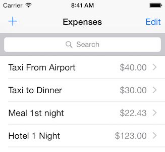
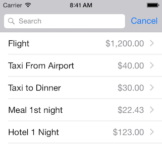

Duration
~15 minutes
Goals
The primary goal of this lab is to add a search bar to your expense application using the UISearchController.
Required assets
There is a completed solution in the Exercise 5 folder. In addition, if you did not complete the prior exercise, you can use the completed solution from that exercise as a starting point here.
Challenge
Here are the high-level steps you will perform, you will be continuing from the prior exercise.
- Create and add the search controller and the search bar to the UI.
-
Implement the
IUISearchResultsUpdatinginterface which will let you add the ability to filter the expense list. -
Add filtering functionality to the
GetCellandRowsInSectionmethod to use a filtered list instead of the real data whn using the search bar.
Steps
Below are the step-by-step instructions you can use to provide additional details to the above high-level steps.
Adding the search controller and search bar
We will start by adding the Search Bar to our UI.
- Open ExpenseListViewController.cs.
-
Create a new class-field of type
UISearchControllerand assign it to a new instance in yourViewDidLoadmethod after the expenses field has been assigned to the empty list. -
Assign the
SearchResultsUpdatercallback to the View Controller (this), we will implement the interface in a moment. -
Set the
DimsBackgroundDuringPresentationtofalse. -
Continuing in your
ViewDidLoadmethod, add the search bar to the UI by assigning theTableView.TableHeaderViewproperty to thesearchController.SearchBarproperty. -
Even though it's not necessary in this particularly UI, set the
DefinesPresentationContexttotrueto properly manage the view parenting - it won't hurt anything to have it present, and then callSizeToFiton the search bar property to make sure it sizes correctly. -
Next, implement the
IUISearchResultsUpdatinginterface on yourExpenseListViewControllerclass - this has a single method which you must define:UpdateSearchResultsForSearchController, and it takes a single parameter which is theUISearchController. This method is called when you interact with the search bar UI. You can use the built-in "Implement Interface" feature of VS/XS to get the method defined for you (just right-click on the interface name once you add it to the list of defined interfaces to find the option). - Leave the method blank and run the app to see the new search UI added to your application. 
- You can tap in the search box to activate the search experience - notice how it animates onto the navigation bar, replacing the Edit button and Add (+) button? That's the standard experience and exactly what we want in this case (it doesn't make sense to switch to editing mode when we are searching). You can still use swipe gestures while searching however, which is convenient because it means we can delete from a filtered list. 
- Try typing something into the edit box - notice that nothing happens because we've not added the filtering code yet. Let's do that next.
Implement the filter support with GetCell and RowsInSection
We will be reusing our TableView to display the filtered results. To do that, we need to change our GetCell and RowsInSection method to respect the text typed in the search box.
-
To make this easy, we will use a separate collection when providing filtering. Create a new class field of type
List<Expense>named filteredExpenses. -
In your
UpdateSearchResultsForSearchControllermethod, use the passed searchController parameter and check theActiveproperty. If the search UI is active, set the filteredExpenses to a new, empty list. -
If the property is
false, then set the filtered list tonull. We'll use this to drive ourGetCellandRowsInSectionmethods. -
Finally, update the TableView data to the filter, let's use a method to do this action - add a call to a method named FilterContentForSearchText at the end of your
UpdateSearchResultsForSearchControllermethod, passing the SearchController's text property. - Here's the method implementation for you to use - it uses a LINQ expression to filter all the data using the title:
-
The next step is to pull from the filters when the search is running and get or edit proper expenses based on the search. We will need to alter several methods which access the collection:
GetCell,RowsInSection,OnFlipBillable,DeleteExpense, andPrepareForSegue. If the filteredExpenses list is notnull, then we will use that as our source for the data and count; otherwise use the originalexpensescollection. -
Run the application and enter some text into the search bar to begin filtering your list. This will cause the
GetCellmethod to use the filteredExpenses list instead of the full list. Try tapping on an item and make sure it picks up the correct item while there is a filter in place (e.g.PrepareForSegueis using the filter).
void FilterContentForSearchText(string text)
{
// Make sure to add using statement for System.Linq if needed.
if (filteredExpenses != null) {
filteredExpenses.Clear();
filteredExpenses.AddRange(
expenses.Where(e =>
string.IsNullOrWhiteSpace(text)
|| e.Title.ToUpper().Contains(text.ToUpper())));
}
TableView.ReloadData();
}
Summary
In this exercise, you added a search bar and search controller to the Table View using UISearchController.